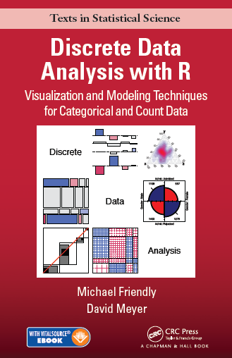
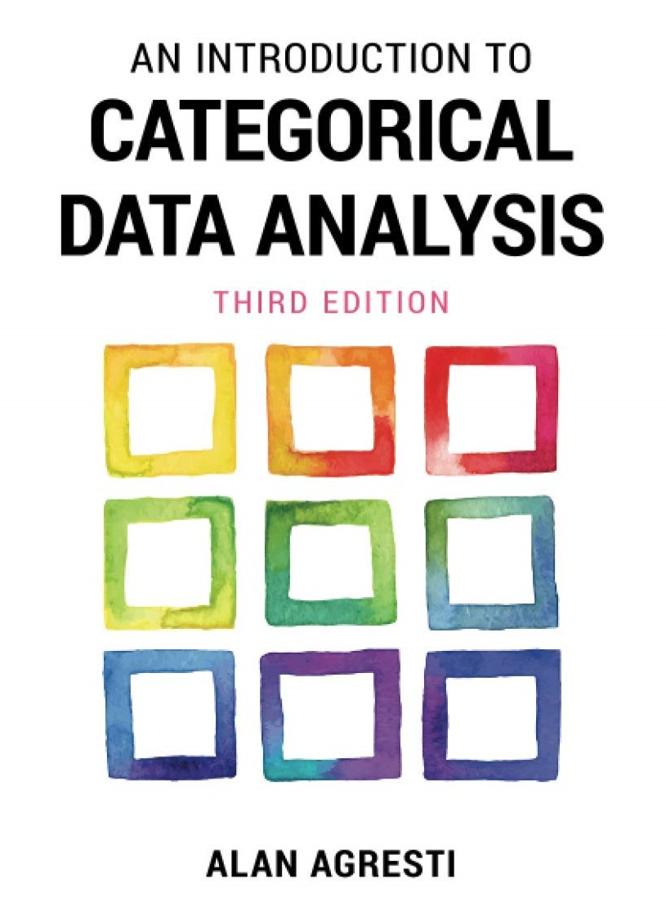
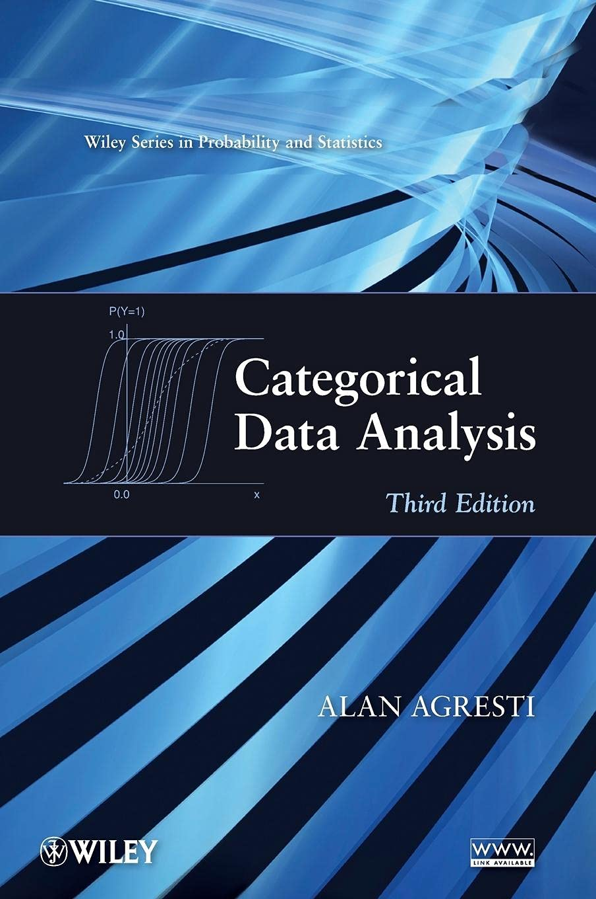
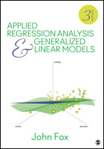

Resources
## Warning: package 'htmltools' was built under R version 4.5.2Books
Main texts
|
 |
Friendly & Meyer (2016),
Discrete Data Analysis with R: Visualization and Modeling Techniques for
Categorical and Count Data
. This book provides the syllabus and main content for the course.
Use the code ADC22 for a 30% discount from the publisher's web site.
Web site for the book: http://ddar.datavis.ca/ |
|
 |
Alan Agresti (2019),
Introduction to Categorical Data Analysis, 3rd Ed.
. A somewhat parallel book, offering a different perspective on categorical data analysis.
An ebook version can be purchased from the York Bookstore. See How to purchase your course materials for PSYC 6136 |
Supplementary readings
|
 |
Agresti (2013)
Categorical Data Analysis
. A much more technical book, that many consider the 'bible' for categorical data analysis methods.
Web site for the book http://www.stat.ufl.edu/~aa/cda/cda.html Solutions manual for R https://home.comcast.net/~lthompson221/Splusdiscrete2.pdf A PDF copy of this book is available to students in this course. |
|
 |
Fox (2015) Applied Regression Analysis and Generalized Linear Models . An excellent text on linear models; Part IV on Generalized Linear Models provides a clear and comprehensive discussion. |
Software
In lectures and lab sessions I will be using R software exclusively, together with the R Studio user interface for R.
You are well-advised to download and install these to your computer so you can follow along.
Instructions to install R and R Studio for Windows and Mac. There is also a learnr tutorial that guides you through the steps.
I recommend that you set up an RStudio project for your work in the course, where you can organize your notes and work on assignments, projects, etc. I created a template for this on GitHub: my6136. You can simply download this to your computer, and then open it in RStudio (double-click on the file
my6136.Rproj).Alternatively, if use GitHub or you’re willing to create a GitHub account (highly recommended), you can fork and clone this repo into your own GitHub account. In the process, you’ll learn something about version control and the
The
my6136project has the following folders set up for you to use, but change anything to suit your workflow.
my6136
├── assign
├── data
├── images
├── notes
├── R
└── tutorialsMy install-vcd-pkgs.R script, to install the most useful packages for this course. Download and run this in your R or RStudio console.
R Studio cheatsheets A handy collection of cheat sheets for R, R Studio and a number of the most useful R packages. You can also get some of these in R Studio from the menu
Help -> Cheat sheets.An Introduction to R Graphics Notes from my SCS short course on R Graphics.
The
vcdExtrapackage contains a number of vignettes, each giving practical methods for working with categorical data and models.Short Making tables in R tutorial. Also: Udi’s Psy3136 Tables tutorial on making tables with the
rempsycandapaTablespackages.
Making plots with ggplot2
The majority of the graphs in DDAR
and in my lectures use custom graphic methods implemented in the
vcd, vcdExtra, ca and other
packages specific to categorical data analysis. Yet it is also helpful
to learn how to make and customize graphs using ggplot2,
the modern lingua franca for specifying and producing
graphs.
Here are a few links that I find useful:
The ggplot2 Book is the bible of graphing with the Grammar of Graphics framework. It explains the logic of layers, geoms, scales, themes, etc. It has many, many small, easily understood examples.
The R Graphics Cookbook is a great resource of recipes for ggplot2, organized by type of graph (bar charts, line graphs, scatterplots, …) and things you might want to do with them.
My favorite book on general ideas about graphs: Claus Wilke, Fundamentals of Data Visualization. Well thought out, a wide range of topics, good practical advice, lots of examples, but no R code in the book.
My lecture slides from Psy 6135: Psychology of Data Visualization give a reasonable overview:
Papers, talks, blogs and others
Friendly (2002). A brief history of mosaic displays, JCGS 11(1), 89-107. Traces the origin of visual and conceptual ideas leading to modern mosaic displays.
Slides from a talk at CARME 2011, Advances in Visualizing Categorical Data Using the vcd, gnm and vcdExtra Packages in R
Slides from a talk at CARME 2015, General Models and Graphs for Log Odds and Log Odds Ratios. This re-considers some standard loglinear models and graphical methods (correspondence analysis, mosaic plots) from the perspective of models and visualization for log odds and log odds ratios.
Weekly Resources
I’ll post here other things of interest for the topic of the week.
Week 1: Introduction to R
- A (very) short introduction to R covers the basics of installing R and RStudio, the R Studio window layout, and an overview of R commands, data structures and functions. If you haven’t already installed R and R Studio, do so now, and work through some of the examples.
McNamara & Horton (2017), Wrangling categorical data in R describe some aspects of data import and tidying specific to categorical data.
- The vcdExtra vignette, Creating and manipulating frequency tables covers a lot of the material from DDAR, Ch 2
Week 2: Discrete Distributions
See the DDAR web site, Chapter 3: Fitting and Graphing Discrete Distributions for the R code for figures in this chapter.
Several other R packages offer tools for fitting distributions:
The function
MASS::fitdistr()provides maximum likelihood fitting for a variety of univariate distributions, some for continuous (“beta”, “cauchy”, “chi-squared”, “exponential”, “gamma”, “log-normal”, “logistic”, “normal”, “t” and “weibull”) others for discrete distributions: “geometric”, “negative binomial”, “Poisson”. No graphical methods are available there.The
fitdistrpluspackage provides a more comprehensive framework with thefitdist()function for fitting a wide range of distributions (both discrete and continuous) and offers various goodness-of-fit plots and statistics (AIC, BIC, etc.). See the package vignetteThe
discretefitpackage in implements fast Monte Carlo simulations for goodness-of-fit (GOF) tests for discrete distributions. See the package vignette
Week 3: Two-way Contingency Tables
See the DDAR web site, Chapter 4: Two-Way Contingency Tables for the R code for figures in this chapter.
Week 4: Loglinear Models and Mosaic Displays
Foundations
Friendly, M. (1992). Mosaic Displays for Loglinear Models. ASA, Proceedings of the Statistical Graphics Section, 61–68.
Friendly, M. (1994). Mosaic Displays for Multi-way Contingency Tables. Journal of the American Statistical Association, 89, 190–200.
Friendly, M. (1999). Extending Mosaic Displays: Marginal, Conditional, and Partial Views of Categorical Data. Journal of Computational and Graphical Statistics, 8(3), 373–395
R Tutorials and Examples
- Newsom, J. Loglinear Models Tutorial. Portland State University. Clear tutorial with practical examples including political voting data analysis.
Clay Ford. Introduction to Loglinear Models. UVA Library. Modern tutorial demonstrating the use of
glm()for loglinear modeling with substance use data examples.Loglinear Models vignette. vcdExtra package. Practical examples using
loglm()in R with interpretations using independence notation.Mosaic Plots vignette. vcdExtra package. Comprehensive guide to creating and customizing mosaic plots using the
vcdpackage.
Visualization Resources
Visualizing Multivariate Categorical Data. STHDA. Practical guide to visualizing categorical data with examples using
ggplot2and thevcdpackage.Comparative Study of vcd::mosaic and geom_mosaic. Community contributions for EDAV. Compares traditional
vcd::mosaic()with the newerggmosaicapproach, with examples using Titanic data.
Research Applications
- Rosenfeld, M. Interpreting Coefficients of Loglinear Models. Stanford University. Sociology application focusing on interpreting loglinear model coefficients in social science research.
Week 5: Correspondence Analysis
R Tutorials and Examples
CA - Correspondence Analysis in R: Essentials. STHDA. Comprehensive tutorial demonstrating how to compute and visualize CA using the
caandfactoextrapackages, with examples using contingency tables.Correspondence Analysis in R. Quick R (StatMethods). Concise tutorial showing how to use the
capackage with basic code examples for fitting and plotting CA.Sanchez, G. 5 Functions to do Correspondence Analysis in R. Compares five different R packages for conducting CA, helping you choose the best approach for your needs.
Correspondence Analysis for Historical Research with R. Programming Historian. Step-by-step tutorial showing how CA can be applied to historical data, with complete worked examples.
MCA - Multiple Correspondence Analysis in R: Essentials. STHDA. Complete guide to computing and visualizing MCA using
FactoMineRandfactoextra, extending CA to more than two categorical variables.Swiebold, T. Multiple Correspondence Analysis. Multivariate Statistical Analysis using R. Chapter on MCA with detailed R code examples and interpretation.
Interpretation and Visualization Guides
How to Interpret Correspondence Analysis Plots (It Probably Isn’t the Way You Think). Displayr. Essential reading on common misconceptions about interpreting CA plots and the correct way to read distances and angles.
How Correspondence Analysis Works (With Examples). Displayr. Clear explanation of the mathematics and logic behind CA, with worked examples showing how to interpret results.
Sourial, N., et al. (2010). Correspondence analysis is a useful tool to uncover the relationships among categorical variables. Journal of Clinical Epidemiology, 63(6), 638-646. Tutorial paper demonstrating CA with medical research examples.
Research Applications
Clausen, S-E. (1998). Social Research Update 7: Correspondence Analysis. University of Surrey. Overview of CA applications in sociological research, explaining its value for exploring categorical data relationships.
Souza, A.C., et al. (2014). Correspondence Analysis applied to psychological research. Tutorial on applying CA to psychology research with SPSS and R examples.
Understanding Correspondence Analysis: Exploring Relationships between Categorical Variables in Sociology. Overview of CA’s applications in studying segregation patterns, social status classification, and other sociological phenomena.
Books and Comprehensive Guides
- Greenacre, M. (2017). Correspondence Analysis in Practice, 3rd Edition. CRC Press. The definitive practical guide to CA with applications across social, environmental and health sciences. Includes R code in appendices.
Week 6: Logistic Regression
R Tutorials and Examples
Logit Regression Tutorial. UCLA Statistical Consulting. Comprehensive tutorial showing how to fit logistic regression using
glm()withfamily = "binomial", including interpretation of coefficients and odds ratios.Logistic Regression in R. DataCamp. Modern tutorial covering both base R and tidymodels approaches, with practical examples and interpretation guidance.
Logistic Regression Essentials in R. STHDA. Complete guide to fitting, evaluating and interpreting logistic regression models with working code examples.
Binary Logistic Regression in R. Stats and R. Step-by-step tutorial with a real dataset, covering model fitting, interpretation, and prediction.
Boehmke, B. & Greenwell, B. Logistic Regression. Hands-On Machine Learning with R. Advanced chapter covering variable importance, partial dependence plots, and model tuning.
Effect Plots and Visualization
Clay Ford. Visualizing the Effects of Logistic Regression. UVA Library. Tutorial on using the
effectspackage to create effect displays that show how predictors relate to probability of success.Predictor Effects Graphics Gallery. Effects package vignette. Gallery of effect plots for various models including logistic regression, showing both link and response scales.
Visualizing Regression Results in R. SSCC Wisconsin. Demonstrates the
marginsandggeffectspackages for creating marginal effects plots.Plotting Estimates of Regression Models. sjPlot package vignette. Shows how to create forest plots and coefficient visualizations for logistic regression results.
Plotting Your Logistic Regression Models. University of Oregon R Club. Practical guide to visualizing logistic regression predictions and effects using base R and ggplot2.
Model Diagnostics
Logistic Regression Assumptions and Diagnostics in R. STHDA. Complete guide to checking assumptions and identifying influential observations using standardized residuals, leverage, and Cook’s distance.
Model Diagnostics for Logistic Regression. Penn State STAT 504. Detailed coverage of residuals, leverage, and influence measures with interpretation guidelines.
Zhang, Z. (2016). Residuals and regression diagnostics: focusing on logistic regression. Annals of Translational Medicine, 4(10). Tutorial paper explaining outliers, leverage, and influence with R examples using the
carpackage.Newsom, J. Diagnostics for Logistic Regression. Portland State University. Handout covering residuals, influential observations, and diagnostic plots for logistic regression.
Interpreting Odds Ratios
FAQ: How do I interpret odds ratios in logistic regression? UCLA Statistical Consulting. Clear explanation with worked examples showing how odds ratios relate to regression coefficients.
Nahhas, R.W. Interpretation of Logistic Regression Coefficients. Introduction to Regression Methods for Public Health Using R. Chapter on interpreting coefficients, odds ratios, and probability predictions.
Park, H.A. (2013). An Introduction to Logistic Regression: From Basic Concepts to Interpretation with Particular Attention to Nursing Domain. Journal of Korean Academy of Nursing, 43(2), 154-164. Tutorial emphasizing interpretation of odds ratios in health research.
Research Applications
Kayri, M. Predicting Social Trust with Binary Logistic Regression. Educational Sciences. Application of logistic regression to predict social trust using personality and demographic variables.
Liu, Y., et al. (2022). Multiple Logistic Regression Analysis of Smartphone Use in University Students. Frontiers in Psychology. Research using logistic regression to examine relationships between smartphone use, sleep quality, and health.
Week 7: Logistic Regression: Extensions
R Tutorials and Examples
Ordinal Logistic Regression. UCLA Statistical Consulting. Comprehensive tutorial on using
polr()from the MASS package for proportional odds models, with interpretation of coefficients as proportional odds ratios.Nahhas, R.W. Ordinal Logistic Regression. Introduction to Regression Methods for Public Health Using R. Chapter covering ordered categorical responses with examples using
polr().Keith McNulty. Proportional Odds Logistic Regression for Ordered Category Outcomes. Handbook of Regression Modeling in People Analytics. Emphasizes the proportional odds assumption and how to test it.
Barlaz, M. Ordinal Logistic Regression in R. Tutorial with examples using both MASS and VGAM packages for ordinal regression.
Clay Ford. Fitting and Interpreting a Proportional Odds Model. UVA Library. Step-by-step guide to fitting and interpreting proportional odds models using
polr().Multinomial Logistic Regression. UCLA Statistical Consulting. Tutorial on using
multinom()from the nnet package for unordered categorical responses.Keith McNulty. Multinomial Logistic Regression for Nominal Category Outcomes. Handbook of Regression Modeling in People Analytics. Covers when to use multinomial logit and how to interpret results.
Clay Ford. Getting Started with Multinomial Logit Models. UVA Library. Introduction to multinomial regression using the
nnetpackage with practical examples.Multinomial Regression in R. R-statistics.co. Tutorial with contraceptive choice example showing model fitting and interpretation.
Advanced Methods with VGAM
Agresti, A. Examples of Using R for Modeling Ordinal Data. Comprehensive examples using VGAM for various ordinal regression models including proportional odds and partial proportional odds.
VGAM Package for Ordinal Regression. RPubs tutorial. Unified approach to ordinal and polytomous regressions using
vglm()with various link functions.Ordinal Regression with VGAM. Practical tutorial on using
vglm()from VGAM package for cumulative logit models.
Testing Assumptions
The Proportional Odds Assumption. Penn State STAT 504. Explains the proportional odds assumption and how it relates to a latent continuous variable framework.
Understanding the Proportional Odds Assumption in Clinical Trials. Quanticate. Practical guide to testing and interpreting the proportional odds assumption.
Research Applications
Multinomial Logit Model Applications. ScienceDirect. Overview of applications in transportation, consumer behavior, occupational choice, and e-commerce.
Torres-Reyna, O. Logit, Probit, and Multinomial Logit Models in R. Princeton University. Tutorial covering binary, ordinal, and multinomial models with social science examples.
Week 8: Extending Loglinear Models
The gnm Package: Generalized Nonlinear Models
Turner, H. & Firth, D. Generalized Nonlinear Models in R: An Overview of the gnm Package. CRAN vignette. Comprehensive introduction to the gnm package, covering multiplicative terms, RC models, UNIDIFF, and diagonal reference models.
Introduction to Generalized Nonlinear Models in R. useR! 2009 Tutorial. Detailed tutorial with examples of fitting models with
Mult(),MultHomog(), andDiag()functions.Turner, H. gnm: An R Package for Generalized Nonlinear Models. Presentation covering gnm functionality with practical examples of RC models and specialized nonlinear terms.
gnm Package Documentation. University of Warwick. Official gnm package page with resources, papers, and development information.
RC Models and Association Models
Fitting Row-Column Association Models. logmult package documentation. Details on fitting Goodman’s RC(M) association models using the
rc()function with automatic selection of starting values.logmult Package: Log-Multiplicative Models. CRAN page for logmult package. Fits log-multiplicative models including RC(M) row-column association models with convenient printing, plots, and bootstrap standard errors.
Short Reference for logmult. logmult vignette. Tutorial on fitting association models with one or several dimensions, including layer effects for stratified tables.
Models for Square Tables
Mobility Tables. vcdExtra package vignette. Extensive examples of models for square tables including symmetry, quasi-symmetry, and diagonal reference models using social mobility data.
Diagonal Reference Models with Dref. gnm package documentation. Details on specifying diagonal reference terms as introduced by Sobel (1981, 1985) for square tables with the form µ_ij = w γ_i + (1 - w) γ_j.
Quasi-Symmetry Model. Penn State STAT 504. Explanation of quasi-symmetry models for square contingency tables, contrasted with symmetry and marginal homogeneity.
Agresti, A. (1983). A Simple Diagonals-Parameter Symmetry and Quasi-Symmetry Model. Statistics & Probability Letters. Classic paper on diagonal-parameter models for square tables.
Specialized Models and Applications
Tomizawa, S., et al. (2022). Advances in Quasi-Symmetry for Square Contingency Tables. Symmetry, 14(5), 1051. Review of recent developments in quasi-symmetry models including ordinal QS and association-based models.
Kateri, M., et al. (2022). Quasi Association Models for Square Contingency Tables with Ordinal Categories. Symmetry, 14(4), 805. Parsimonious QS-type models for ordinal classifications based on local odds ratios.
Goodman, L.A. (1979). Simple Models for the Analysis of Association in Cross-Classifications having Ordered Categories. Journal of the American Statistical Association, 74(367), 537-552. Foundational paper on association models for ordered categorical data.
Research Applications
Wong, R.S-K. (1995). Extensions in the Use of Log-Multiplicative Scaled Association Models in Multiway Contingency Tables. Sociological Methods & Research, 23(4), 507-538. Applications of association models to social science research with multiway tables.
Becker, M.P. & Clogg, C.C. (1989). Analysis of Sets of Two-Way Contingency Tables Using Association Models. Journal of the American Statistical Association, 84(405), 142-151. Methods for analyzing multiple contingency tables using association models.
Week 9: GLMs for Count Data
GLM Families and Link Functions
Helwig, N. Generalized Linear Models in R. University of Minnesota. Comprehensive tutorial covering exponential family distributions, link functions, and the three components of GLMs.
Introduction to GLMs. Penn State STAT 504. Introduction to generalized linear models explaining the relationship between random and systematic components through link functions.
Turner, H. Introduction to Generalized Linear Models. Practical introduction to GLMs with R, covering exponential families and canonical link functions.
Generalized Linear Models in R. Quick-R (StatMethods). Concise reference for fitting logistic regression and Poisson regression using
glm()with different family functions.
Poisson Regression Tutorials
Poisson Regression. UCLA Statistical Consulting. Comprehensive tutorial demonstrating Poisson regression using
glm()withfamily="poisson", including interpretation of coefficients and model diagnostics.R - Poisson Regression Model for Count Data. Penn State STAT 504. Tutorial with crab data example showing how to specify Poisson distribution with
family=poissonandlink=log.Poisson Regression: A Way to Model Count Data. DataCamp. Practical tutorial covering Poisson regression for count outcomes, including quasi-Poisson models for overdispersion.
Learn to Use Poisson Regression in R. Dataquest. Tutorial covering both count and rate data with Poisson models, including how to get accurate standard errors using quasipoisson.
Buonaccorsi, V. Poisson Regression: Models for Count Data. ELMER: Extensions to the Linear Model using Examples in R. Chapter on Poisson regression with practical R examples.
Overdispersion and Negative Binomial Models
Ver Hoef, J.M. & Boveng, P.L. (2007). Quasi-Poisson vs. Negative Binomial Regression: How Should We Model Overdispersed Count Data?. Ecology, 88(11), 2766-2772. Influential comparison of two approaches for handling overdispersion in count data.
Count Data and Overdispersion. GlmSimulatoR vignette. Explains variance-mean relationships for Poisson (σ²=μ) versus negative binomial (σ²=μ+μ²/θ) distributions.
Negative Binomial Regression. UCLA Statistical Consulting. Tutorial using
glm.nb()from MASS package to estimate negative binomial regression for over-dispersed count data.Clay Ford. Getting Started with Negative Binomial Regression Modeling. UVA Library. Explains when variance differs from mean and how negative binomial addresses this limitation of Poisson.
Rodríguez, G. Models for Over-Dispersed Count Data. Princeton University. Tutorial comparing Poisson and negative binomial models using
glm.nb()from MASS package.Lindén, A. & Mäntyniemi, S. (2011). Using the Negative Binomial Distribution to Model Overdispersion in Ecological Count Data. Ecology, 92(7), 1414-1421. Practical guide to negative binomial models in ecology.
Zero-Inflated and Hurdle Models
Zero-Inflated Poisson Regression. UCLA Statistical Consulting. Tutorial using
zeroinfl()from pscl package, including bootstrapping and confidence intervals.Clay Ford. Getting Started with Hurdle Models. UVA Library. Introduction to hurdle models using
hurdle()from pscl package for handling excess zeros and overdispersion.Zero-Inflated and Hurdle Models for Count Data in R. UCLA OARC Workshop. Comprehensive introduction to two-part models for excess zeros using pscl package.
Zeileis, A., Kleiber, C., & Jackman, S. (2008). Regression Models for Count Data in R. Journal of Statistical Software, 27(8). Comprehensive comparison of Poisson, negative binomial, hurdle, and zero-inflated models.
Models for Excess Zeros using pscl Package. RPubs tutorial. Practical examples of hurdle and zero-inflated regression models with interpretation guidance.
Model Diagnostics
Horvath, B. Generalized Linear Models: Residuals and Diagnostics. RPubs. Tutorial on GLM diagnostics including deviance residuals, Pearson residuals, and diagnostic plots.
García Portugués, E. Model Diagnostics for GLMs. Notes for Predictive Modeling. Chapter covering residual analysis and diagnostic measures for count data models.
Clay Ford. Understanding Deviance Residuals. UVA Library. Explains deviance residuals as diagnostic measures for assessing GLM fit to individual observations.
GLM Residuals Distributions. Agile Data Science. Comparison of different residual types for GLMs with guidance on when to use Pearson vs. deviance residuals for count data.
Research Applications
Too, L.S., et al. (2025). Modelling Count Data in Psychological Research: An Applied Tutorial. International Journal of Psychology. Recent tutorial covering GLMs and zero-augmented models for count data in psychology (panic attacks, store visits, friendships).
Coxe, S., West, S.G., & Aiken, L.S. (2009). The Analysis of Count Data: A Gentle Introduction to Poisson Regression and Its Alternatives. Journal of Personality Assessment, 91(2), 121-136. Introduction to count models for psychological researchers.
Vives, J., Losilla, J-M., & Rodrigo, M-F. (2006). Count Data in Psychological Applied Research. Psychological Reports, 98(3), 821-835. Overview of count data analysis methods in applied psychology.
Lynch, H.J., et al. (2014). Dealing with Under‐ and Over‐dispersed Count Data in Life History, Spatial, and Community Ecology. Ecology, 95(11), 3173-3180. Practical guidance for ecologists on choosing among count data models.
Week 10
Copyright © 2018 Michael Friendly. All rights reserved. || lastModified :
friendly AT yorku DOT ca
 orcid.org/0000-0002-3237-0941
orcid.org/0000-0002-3237-0941